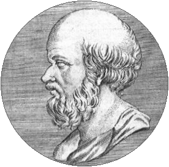

c. 276–194 BC
Greek, Cyrene
Number theory, geography, astronomy
Eratosthenes of Cyrene (modern Libya) was one of the great polymaths of antiquity. He studied in Athens before being invited to Alexandria by Ptolemy III to serve as head librarian of the Great Library — arguably the most prestigious intellectual post in the ancient world.
His sieve, devised around 240 BC, remains the simplest algorithm for finding all primes up to a given bound. The idea is beautifully direct: write down all integers from 2 onwards, then repeatedly cross out all multiples of the smallest unmarked number. What survives is prime. The method is still taught in every number theory course and forms the basis of modern prime-sieve algorithms used in computational number theory and cryptography.
But Eratosthenes was far more than a number theorist. His measurement of the Earth's circumference is one of the great experiments of antiquity. He noticed that at noon on the summer solstice, the Sun was directly overhead in Syene (modern Aswan) but cast a shadow of about 7.2 degrees in Alexandria. Knowing the distance between the two cities, he computed the circumference as roughly 250,000 stadia — remarkably close to the true value. His contemporaries nicknamed him "Beta" because he was second-best at everything, but being second-best across mathematics, geography, astronomy, poetry, and philosophy is not a bad record.
| Phase | Page | Referenced for |
|---|---|---|
| Phase 0 | Trigonometry from Scratch | Estimated the Earth's circumference using shadow angles |
| Phase 1 | Prime Numbers | Devised the Sieve of Eratosthenes to find all primes |